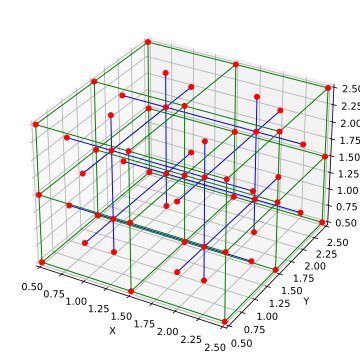

CubicDual¶
- class openpnm.network.CubicDual(*args, **kwargs)[source]¶
Body centered cubic lattice plus face centered nodes on the surfaces
This network is essentially a ‘bcc’ lattice, except that the seconary network (body-centered pores) has pores on each face of the domain, which breaks the body-centric arranagement. This allows boundary conditions to be applied to the seconary network for transport simuations.
- Parameters
shape (list[int]) – The size and shape of the primary cubic network in terms of the number of pores in each direction. Secondary nodes will be added at centers of each unit cell.
spacing (list[float]) – The distance between pores of the primary network in each of the principal directions
label_1 (str) – The label to apply to the primary cubic lattices, which defaults to ‘primary’
label_2 (str) – The label to apply to the secondary cubic lattices, which defaults to ‘seconary’
name (str) – An optional name for the object to help identify it. If not given, one will be generated.
See also
Examples
>>> import openpnm as op >>> import matplotlib.pyplot as plt >>> pn = op.network.CubicDual(shape=[3, 3, 3]) >>> pn.num_pores('pore.primary') # Normal cubic network is present 27 >>> pn.Np # But more pores are present from seconary network 59
And it can be plotted for quick visualization using:
>>> fig, ax = plt.subplots() >>> op.topotools.plot_connections(network=pn, ... throats=pn.throats('primary'), ... color='g', ax=ax) >>> op.topotools.plot_connections(network=pn, ... throats=pn.throats('secondary'), ... color='b', ax=ax) >>> op.topotools.plot_coordinates(network=pn, c='r', s=25, ax=ax)
 For larger networks and more control over presentation use Paraview.
- Attributes
NpA shortcut to query the total number of pores on the object
NtA shortcut to query the total number of throats on the object
PsA shortcut to get a list of all pores on the object
TsA shortcut to get a list of all throats on the object
amAdjacency matrix in the specified sparse format, with throat IDs indicating the non-zero values.
connsReturns the connectivity matrix of the network.
coordsReturns the list of pore coordinates of the network.
imIncidence matrix in the specified sparse format, with pore IDs indicating the non-zero values.
modelsList of available models on the objects
nameString representing the name of the object
networkA shortcut to get a handle to the associated network.
projectA shortcut to get a handle to the associated project.
settingsDictionary containing object settings.
Methods
add_boundary_pores([labels, spacing])Add boundary pores to the specified faces of the network
add_model(propname, model[, regen_mode])Adds a new model to the models dictionary.
This method check the network topological health.
clear([element, mode])A subclassed version of the standard dict's clear method.
copy()create_adjacency_matrix([weights, fmt, ...])Generates a weighted adjacency matrix in the desired sparse format
create_incidence_matrix([weights, fmt, ...])Creates a weighted incidence matrix in the desired sparse format
filter_by_label([pores, throats, labels, mode])Returns which of the supplied pores (or throats) has the specified label(s)
find_connected_pores([throats, flatten, mode])Return a list of pores connected to the given list of throats
find_connecting_throat(P1, P2)Return the throat index connecting pairs of pores.
find_nearby_pores(pores, r[, flatten, ...])Find all pores within a given radial distance of the input pore(s) regardless of whether or not they are toplogically connected.
find_neighbor_pores(pores[, mode, flatten, ...])Returns a list of pores that are direct neighbors to the given pore(s)
find_neighbor_throats(pores[, mode, flatten])Returns a list of throats neighboring the given pore(s)
fromkeys(iterable[, value])Create a new dictionary with keys from iterable and values set to value.
get(key[, default])Return the value for key if key is in the dictionary, else default.
get_adjacency_matrix([fmt])Adjacency matrix in the specified sparse format, with throat IDs indicating the non-zero values.
get_conduit_data(prop[, mode])Combines requested data into a single 3-column array.
get_incidence_matrix([fmt])Incidence matrix in the specified sparse format, with pore IDs indicating the non-zero values.
interleave_data(prop)Retrieves requested property from associated objects, to produce a full Np or Nt length array.
interpolate_data(propname[, mode])Determines a pore (or throat) property as the average of it's neighboring throats (or pores)
items()keys([element, mode, deep])This subclass works exactly like
keyswhen no arguments are passed, but optionally accepts anelementand amode, which filters the output to only the requested keys.labels([pores, throats, element, mode])Returns a list of labels present on the object
num_neighbors(pores[, mode, flatten])Returns the number of neigbhoring pores for each given input pore
num_pores([labels, mode])Returns the number of pores of the specified labels
num_throats([labels, mode])Return the number of throats of the specified labels
params()Return parameter names and values in a dictionary
pop(k[,d])If key is not found, d is returned if given, otherwise KeyError is raised
popitem(/)Remove and return a (key, value) pair as a 2-tuple.
pores([labels, mode, asmask, to_global])Returns pore indicies where given labels exist, according to the logic specified by the
modeargument.props([element, mode, deep])Returns a list containing the names of all defined pore or throat properties.
regenerate_models([propnames, exclude, deep])Re-runs the specified model or models.
remove_model([propname, mode])Removes model and data from object.
set_label(label[, pores, throats, mode])Creates or updates a label array
setdefault(key[, default])Insert key with a value of default if key is not in the dictionary.
show_hist([props, bins, fontsize])Shows a quick plot of key property distributions.
throats([labels, mode, asmask, to_global])Returns throat locations where given labels exist, according to the logic specified by the
modeargument.to_indices(mask)Converts a boolean mask to a list of pore or throat indices.
to_mask([pores, throats])Convert a list of pore or throat indices into a boolean mask of the correct length.
update([E, ]**F)If E is present and has a .keys() method, then does: for k in E: D[k] = E[k] If E is present and lacks a .keys() method, then does: for k, v in E: D[k] = v In either case, this is followed by: for k in F: D[k] = F[k]
values()